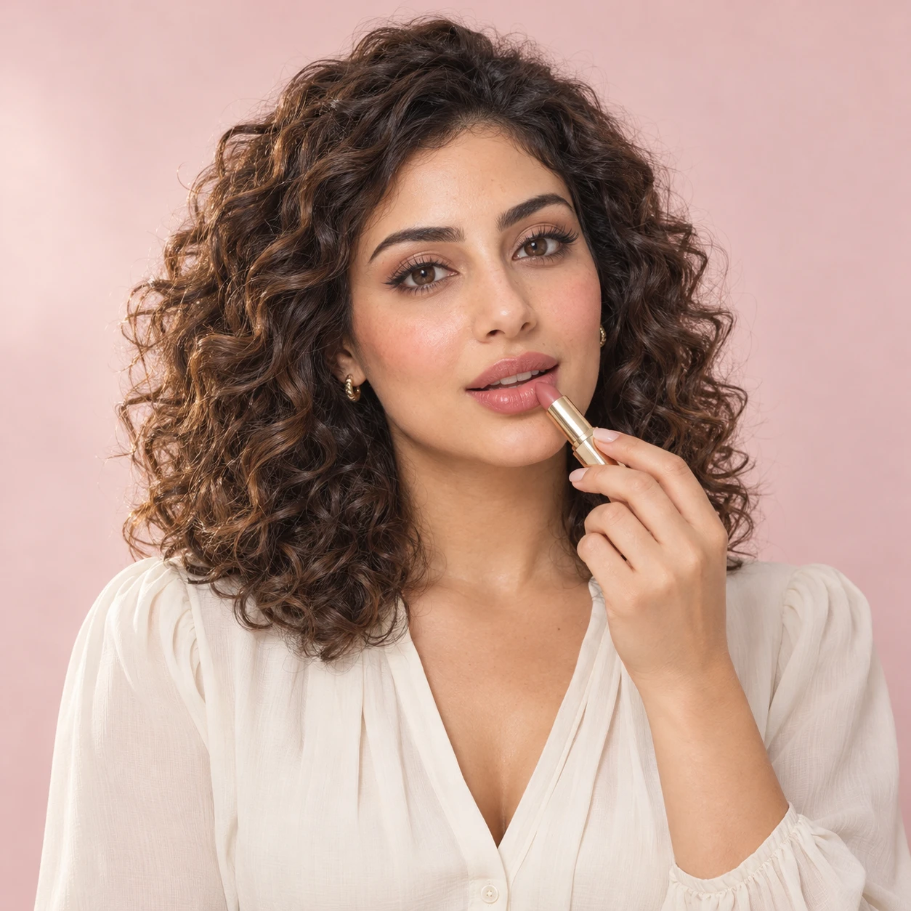
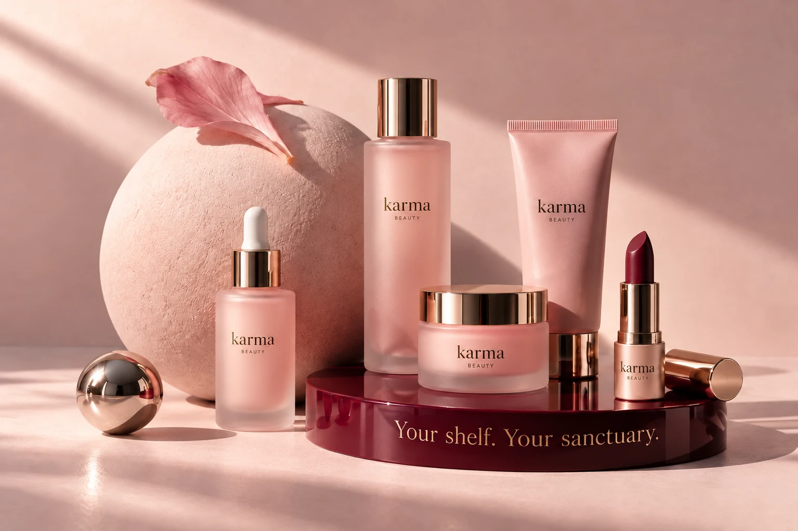

رؤيتنا
نخلق مساحة كل واحدة تكتشف فيها جمالها بطريقتها، وتحس إن العناية بنفسها جزء بسيط وممتع من يومها.
EVERY DAY IS A GOOD BEAUTY DAY
تفاصيل صغيرة، إحساس مختلف.
اكتشفي عالمًا من العناية والألوان، يشبهك إنتِ.
خصم 10% + عيّنة عناية مع أول طلب
عرض تجريبي للمعاينة
THE BEAUTY EDIT
FIND YOUR KIND OF BEAUTY

THE KARMA PHILOSOPHY
✳وسط كل تفاصيل اليوم، خدي نفس… ووقت لنفسك.
كارما مساحة صغيرة للاهتمام بنفسك، والاستمتاع بالجمال بطريقتك، من غير قواعد كتير.
BEAUTY WITH A PURPOSE
جمال يحترم اختلافك، وعناية تبدأ منكِ.
نخلق مساحة كل واحدة تكتشف فيها جمالها بطريقتها، وتحس إن العناية بنفسها جزء بسيط وممتع من يومها.
نقرّب لكِ عالم الجمال باختيارات واضحة وتجربة تسوّق سهلة، ومعلومات تساعدك تختاري اللي يناسبك بثقة.
LET’S TALK BEAUTY
عندك سؤال عن منتج أو محتاجة مساعدة في اختيارك؟
الرقم والبريد بيانات تجريبية للعرض، والتواصل غير مفعّل حاليًا.
اختاري طريقة الدفع المناسبة من حقيبتك.